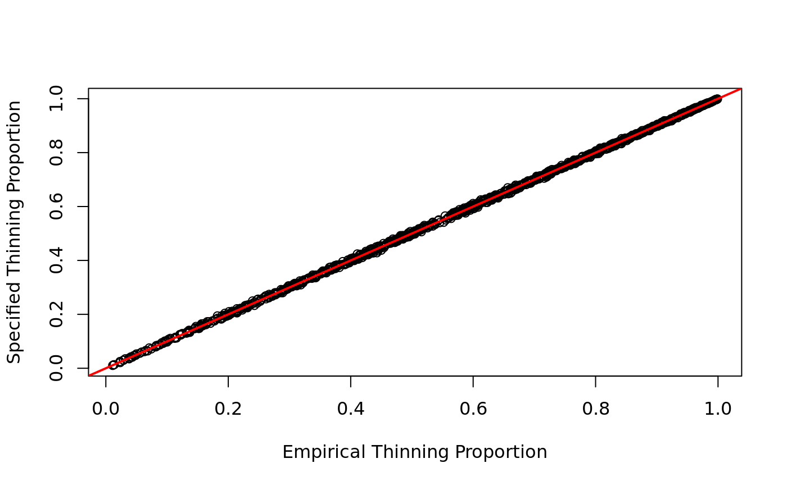

Given a matrix of real RNA-seq counts, this function will apply a
separate, user-provided thinning factor to each gene. This uniformly
lowers the counts for all samples in a gene. The thinning factor
should be provided on the log2-scale. This is a specific application
of the binomial thinning approach in thin_diff. The method is
described in detail in Gerard (2019).
thin_gene(mat, thinlog2, relative = FALSE)
| mat | A numeric matrix of RNA-seq counts. The rows index the genes and the columns index the samples. |
|---|---|
| thinlog2 | A vector of numerics. Element i is the amount to thin (on the log2 scale) for gene i. For example, a value of 0 means that we do not thin, a value of 1 means that we thin by a factor of 2, a value of 2 means we thin by a factor of 4, etc. |
| relative | A logical. Should we apply relative thinning ( |
A list-like S3 object of class ThinData.
Components include some or all of the following:
matThe modified matrix of counts.
designmatThe design matrix of variables used to simulate
signal. This is made by column-binding design_fixed and the
permuted version of design_perm.
coefmatA matrix of coefficients corresponding to
designmat.
design_obsAdditional variables that should be included in
your design matrix in downstream fittings. This is made by
column-binding the vector of 1's with design_obs.
svA matrix of estimated surrogate variables. In simulation studies you would probably leave this out and estimate your own surrogate variables.
cormatA matrix of target correlations between the
surrogate variables and the permuted variables in the design matrix.
This might be different from the target_cor you input because
we pass it through fix_cor to ensure
positive semi-definiteness of the resulting covariance matrix.
matching_varA matrix of simulated variables used to
permute design_perm if the target_cor is not
NULL.
Gerard D (2019). "Data-based RNA-seq Simulations by Binomial Thinning." bioRxiv. doi: 10.1101/758524.
select_countsFor subsampling the rows and columns of your real RNA-seq count matrix prior to applying binomial thinning.
thin_diffFor the more general thinning approach.
thin_libFor thinning sample-wise instead of gene-wise.
thin_allFor thinning all counts uniformly.
ThinDataToSummarizedExperimentFor converting a ThinData object to a SummarizedExperiment object.
ThinDataToDESeqDataSetFor converting a ThinData object to a DESeqDataSet object.
## Generate count data and thinning factors ## In practice, you would obtain mat from a real dataset, not simulate it. set.seed(1) n <- 10 p <- 1000 lambda <- 1000 mat <- matrix(lambda, ncol = n, nrow = p) thinlog2 <- rexp(n = p, rate = 1) ## Thin total gene expressions thout <- thin_gene(mat = mat, thinlog2 = thinlog2) ## Compare empirical thinning proportions to specified thinning proportions empirical_propvec <- rowMeans(thout$mat) / lambda specified_propvec <- 2 ^ (-thinlog2) plot(empirical_propvec, specified_propvec, xlab = "Empirical Thinning Proportion", ylab = "Specified Thinning Proportion")